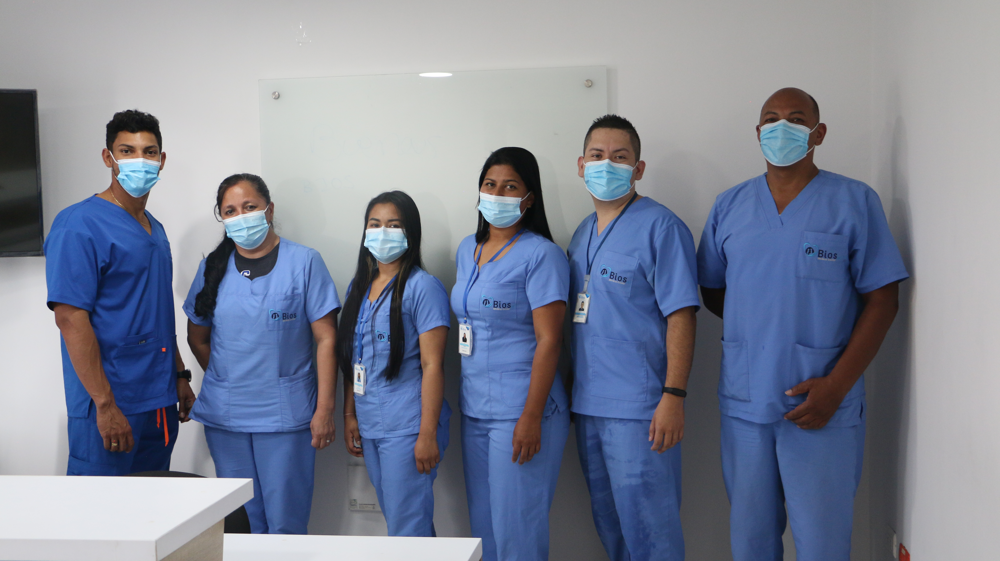

Detrás de cada cita, cada resultado y cada vida que acompañamos, hay personas comprometidas con hacer las cosas bien.

Somos más de 200 Talentos BIOS: profesionales de la salud, especialistas, técnicos, tecnólogos, auxiliares de enfermería, jefes de área, conductores, ingenieros, abogados y administrativos — cada uno esencial, cada uno parte fundamental de esta historia.
Lo que BIOS es hoy se lo debemos a ellos. A cada turno cumplido, cada gestión resuelta, cada kilómetro recorrido para llegar a un municipio lejano. Los indicadores que hemos alcanzado, las metas que hemos superado, los usuarios a quienes hemos llegado — todo eso lo han construido ellos, con dedicación, con vocación y con compromiso.
Atendemos con empatía, respeto y cercanía humana.
Profesionales altamente capacitados y en constante actualización.
Atención integral, coordinada y centrada en el paciente.

Profesionales de salud
Experiencia promedio
Compromiso con el paciente
Creemos en una atención centrada en la persona, donde cada paciente es escuchado, acompañado y tratado con dignidad. Nuestro equipo no solo cuida tu salud, cuida de ti.
En BIOS IPS trabajamos cada día para brindarte una atención segura, humana y profesional. Tu bienestar es nuestra prioridad.